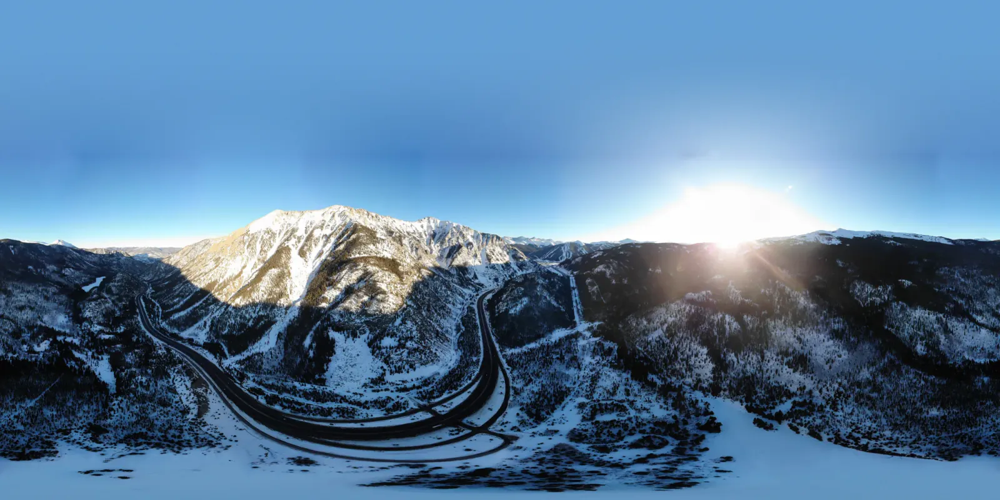

Borrowed Light
I signed off my last snowboarding post, right before Air Force BMT, with “Till next winter, Colorado!” In early 2020, Colorado got another winter out of me. The warm-up came in January: a copper-red ridge in central Utah with snow packed into every gully, a groomed run above Keystone, then Glenwood Canyon under low cloud, its pale cliffs streaked white and I-70 threading the walls on viaducts and through tunnels.
On the first Saturday of February, the sun was already behind the mountains when I sent the drone up over Silverthorne. The sky hadn't gotten the message. Magenta and violet poured across the horizon while the town switched on its lights and I-70 turned into a ribbon of red and white. Just past the rooftops lay Dillon Reservoir, a lake that didn't exist before the early 1960s, when Denver Water dammed the Blue River so it could send Summit County's snowmelt through a tunnel under the Continental Divide. Frozen over, with the dam drawn across it like a ruler, it looked more like a salt flat. Within minutes the magenta faded to peach and the valley went blue.

On Sunday I rode Vail, where the sun made a starburst over layered ranges all the way to the horizon. Later that afternoon the drone was up again over Tenmile Canyon, and the low sun raked across a sheer wall of snow and bare rock. Avalanche chutes ran down toward the plowed lanes of I-70, and ski runs striped a ridge on the far side.
Monday morning found me under frosted pines at Keystone. By midday I was crossing Loveland Pass, nearly 12,000 feet up on the Continental Divide, where snowmelt parts ways, west to the Pacific and east to the Atlantic. That day the ridgelines faded into cloud. Six weeks later, the pandemic shut Colorado's ski areas down for the season. In hindsight, that whole weekend was borrowed light too.